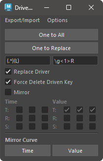

セットドリブンキーの編集を補助するツールです。
セットドリブンキーの編集を補助するツールです。
セットドリブンキーに対して主に以下の機能を提供します。
専用のメニューか、以下のコマンドでツールを起動します。
import faketools.tools.drivenkey_tools_ui
faketools.tools.drivenkey_tools_ui.show_ui()

セットドリブンキーのファイルへの保存、また、保存したファイルからの再現を行います。
セットドリブンキーのファイルへの保存を行うには、以下の手順を行います。
セットドリブンキーが設定されたノードを選択します ( 複数選択可 )。
Export/Import メニューの Export か Export File を選択します。
Export は、TEMP フォルダに保存します。Export File は、保存先を選択します。セットドリブンキーのファイルを読み込むには、以下の手順を行います。
Export/Import メニューの Import か Import File を選択します。
Import は、TEMP フォルダから読み込みます。Import File は、読み込むファイルを選択します。ファイルに保存されたセットドリブンキーが再現され、適応先のノードが選択されます。
セットドリブンキーのコピーとペーストを行います。
One to All と One to Replace の二つの方法があります。

一つのノードのセットドリブンキーを、複数のノードにコピーします。
コピーするには、以下の手順を行います。
One to All ボタンを押します。一つのノードのセットドリブンキーを、そのノード名を置換したノードをシーンから検索してコピーします。
ノード名の置換には、One to Replace ボタン下のフィールドを使用します。 ( python の正規表現で置換されます。 )
コピーするには、以下の手順を行います。
One to Replace ボタンを押します。置換後のノードがシーンから検索され、コピーされます。アニメーションカーブのミラーを行います。

ミラーを行うには、以下の手順を行います。
Time か Value ボタンを押します。
Time ボタンを押すと、アニメーションカーブの時間方向にミラーします。Value ボタンを押すと、アニメーションカーブの値方向にミラーします。いくつかの追加機能があります。